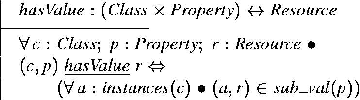
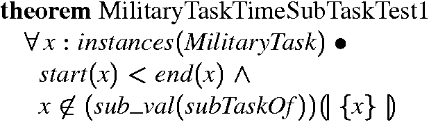

Figure 1. Discovery of an unsatisfiable concept by RACER
Semantic Web gives data well-defined and machine-understandable meaning so that they can be processed by intelligent software agents on human's behalf [2]. Data are expressed in terms of ontologies, which define their concepts and relationships. Ontology languages such as DAML+OIL [23] and OWL [6] provide basic vocabularies for describing ontologies. Based on description logic, ontology languages were originally designed to be decidable [27] so that agents can perform reasoning without human guidance. Consistency and correctness of shared ontologies are vital to the correct functioning of agents. Hence, ontology checking and verification tools, such as RACER [11] and FaCT [13], etc., have been developed with the advancement of ontology languages to facilitate ontology creation, management, verification, merging, etc. However, some important complex ontology-related properties cannot be expressed by current ontology languages and consequently cannot be checked by ontology tools such as RACER and FaCT. For example, in the military plan ontology, it is important to ensure that no single military unit is assigned to two different military tasks (that may be at different locations) at the same time. Such a property is difficult to be expressed by DAML+OIL or OWL but validity of such properties is significant. Hence, the ability of expressing and checking properties beyond the modeling power of ontology languages is desirable. We propose to use the software engineering techniques and tools, i.e., Z and Alloy, to complement the ontology tools for checking Semantic Web documents.
Z [24] is a widely used formal specification language designed to model system data and state. It is based on ZF set theory and first-order predicate logic, which can be regarded as a superset of description logic [16]. This intrinsic homogeneity implies that Z is more expressive than ontology languages and can capture complex constraints beyound current web ontology. Z/EVES [20] is an interactive proof tool for checking and reasoning Z specifications.
Alloy [14] was originally developed as a lightweight modeling language aimed at automated analysis. Its design was influenced by Z but is less expressive. Alloy Analyzer (AA) [15] is a fully-automated tool for analyzing Alloy specifications with special model checking features which are helpful to trace the exact source of errors.
In our previous works, we have applied Z/EVES [7] and AA [8] separately to reasoning of Web ontologies. We found out that the Z/EVES and AA approaches complement each other in expressiveness and automation. Moreover, they are also complementary to Semantic Web reasoners such as RACER. This motivated us to propose this combined approach to checking Web ontologies using these tools.
We believe that the quality of Semantic Web documents can be assured with higher confidence by using the synergy of reasoning power of RACER, Z/EVES and AA. In our approach, Z/EVES is first applied to remove trivial syntax and type errors of the ontologies. Next, RACER is used to identify any ontological inconsistencies. Then, AA is used as a surgery tool to trace the origins of such inconsistencies. Finally Z/EVES is used again to express complex ontology-related properties and reveal errors beyond the modeling capabilities of the current web ontology languages. By applying these tools systematically to an ontology, we can not only uncover more errors than using any one of them alone, but also correct any inconsistencies more easily and precisely.
The rest of the paper is organized as follows. We give an overview of Semantic Web, ontology languages, Z and Alloy and their tool support in Section 2. Z and Alloy semantics for DAML+OIL are presented in Section 3. In Section 4, we briefly introduce the respective transformation processes from DAML+OIL to Z and Alloy and the military plan ontologies, which will be used to illustrate the approach of checking ontologies in Section 5, in which we firstly applied the approach to the plan ontology itself, where we found an ontological error, and traced its origin using AA. Secondly, we used the approach to check one instance ontology. Z/EVES discovered a number of errors beyond the modeling capabilities of DAML+OIL and Alloy. Finally, Section 6 concludes the paper.
Semantic Web was originally proposed by Tim Berners-Lee et al. as "an extension to the current web in which information is given well-defined meaning, better enabling computers and people to work in cooperation" [2]. It is a universal medium for exchange of data and uses metadata to add meaning to data so that they can be understood, shared, processed and integrated by machines autonomously. In other words, web contents are not only for human consumption, machines will also be able to participate. This ability of intelligent agents greatly increases the power of the web by having machines undertaking works on behalf of human. The understanding of data is built upon giving data well-defined structure and meaning, which is accomplished by ontologies.
Ontologies are used to represent concepts and relationships of data on the web and they are expressed in terms of ontology languages. The structural well-definedness of these languages comes from XML, cornerstone of a series of technologies. On top of XML, the Resource Description Framework (RDF) [18] is a framework for metadata and describes resources on the web. RDF Schema [3] provides basic vocabularies for RDF documents, which are made of a collection of statements of the form < subject predicate object>, where subject is the resource we are interested in, predicate specifies the property or characteristic of the subject and object states the value of the property. RDF Schema allows structured and semi-structured data to be mixed, which makes data hard for machines to understand. Moreover, it does not contain all desired modeling primitives.
DAML (DARPA Agent Markup Language) [23] is built on top of RDF Schema and it has a much richer set of language constructs to express class and property relationships than those allowed in RDF Schema. DAML combined effort with the Ontology Inference Layer (OIL) [4] project and it is now referred to as DAML+OIL. The other major extension of DAML+OIL is the ability to express restrictions on class and property definitions. By restricting existing classes and properties, new concepts can be built incrementally. This facilitates construction of new ontologies as previous ones can be reused.
In 2003, based on DAML+OIL, a new ontology language OWL [26] was published by W3C. It contains three sublanguages: OWL Lite, DL and Full, with increasing expressiveness. OWL Lite and DL are decidable whereas OWL Full is generally not.
Ontology-related tools have been built alongside the development of ontology languages. The rest of this subsection will introduce a few of these tools.
Cwm (Closed world machine) [22] is a general-purpose data processor for the Semantic Web. Implemented in Python and command-line based, it is also a forward chaining reasoner for RDF.
Triple [21] is a RDF query, inference and transformation language. It does not have a built-in semantics for RDF Schema, but it allows semantics of languages to be defined with rules on top of RDF. This feature of Triple facilitates data aggregation as user can perform RDF reasoning and transformation under different semantics. The Triple tool supports DAML+OIL through external DAML+OIL reasoners such as FaCT and RACER.
FaCT (Fast Classification of Terminologies) [13], developed at University of Manchester, is a TBox (concept-level) reasoner that supports automated concept-level reasoning, namely class subsumption and consistency reasoning. It does not support ABox (instance-level) reasoning. It is implemented in Common Lisp and comes with a FaCT server, which can be accessed across network via its CORBA interface. Given an DAML+OIL ontology, it can classify the ontology (performs subsumption reasoning) so as to reduce redundancy and detects any inconsistency within it.
RACER, the Renamed ABox and Concept Expression Reasoner [11], implements a TBox and ABox reasoner for the description logic [10]. It can be regarded as (a) a Semantic Web inference engine, (b) a description logic reasoning system capable of both TBox and ABox reasoning and (c) a prover for modal logic Km. In the Semantic Web domain, RACER's functionalities include developing ontologies (creating, maintaining and deleting concepts, roles and individuals); querying, retrieving and evaluating the knowledge base, etc. It supports DAML+OIL and RDF.
We chose RACER as the ontology reasoner for our approach since it has a richer set of functionalities and ontology editors such as OilEd [1] and RICE (Racer Interactive Client Environment), both of which can perform reasoning over DAML+OIL with RACER as a background reasoner. In our approach, RACER will be used with OilEd as a user interface.
Z [24] is a formalism based on ZF set theory and first-order predicate logic. It is specially suited to model system data and state. Z/EVES [20] is an interactive system for composing, checking, and analyzing Z specifications. It supports the analysis of Z specifications in a number of ways: syntax and type checking, schema expansion, precondition calculation, domain checking, general theorem proving, etc. In Z/EVES, Z specifications are in the form of sections to improve reuse. The built-in section toolkit defines basic constants and operators. Specifications are built hierarchically by including existing sections as their parents.
Alloy [14] is a structural modeling language emphasizing on automated reasoning support. It treats relations as first class citizens and uses relational composition as a powerful operator to combine various structural entities. The design of Alloy was influenced by Z and it can be (roughly) viewed as a subset of Z. AA is a constraint solver that provides fully automatic simulation and checking. AA works as a compiler: it compiles a given problem into a (usually huge) boolean formula, which is subequently solved by a SAT solver, and the solution is then translated back to AA. Inevitably, a scope - a bound on the size of the domains - must be given to make the problem finite.
AA determines whether there exists a model of the formula. When AA finds an assertion to be false, it generates a counterexample, which (in some cases) makes tracing the error easier, compared to theorem provers. However, the capability of AA is constrained by the way it works. Since AA performs exhaustive search, it does not scale very well. In our experiences, AA can only handle ontologies with no more than twenty entities. Similar to Z/EVES, Alloy specifications are in the form of modules, organized into a tree. Existing modules can be reused by commands open or use.
The aim of our approach is to ensure the absence of ontological inconsistencies and correctness of ontology-related properties to the maximal extend. Hence, to be on the safe side, we assume that the knowledge base (ontology) under investigation contains all relevant facts (Closed World Assumption). The bound on Alloy modules does not cause semantic problems as AA is only used as a surgery tool to locate the sources of identified errors.
In this Section, we present a subset of Z & Alloy semantics for the ontology language DAML+OIL. The full semantics can be found in [7] and [8]. In this Section, the Z definitions will be presented above the corresponding Alloy definitions, which will be in teletype font.
Everything in Semantic Web is a Resource. So we model it as a given type in Z and Alloy.
sig Resource {}
Class corresponds to a concept, which has a number of resources associated with it: the instances of this class. Hence, in Z, we model class as a subset of resource and instances as a function from a class to a set of resources. In Alloy, each class maps a set of resources via the relation instances, which contains all the instance resources. The Alloy keyword disj is used to indicate that class and property are disjoint.
disj sig Class extends Resource
instances: set Resource
Property is also a subset of resource, disjoint with class. A property relates resources to resources. The function sub_val maps each property to the resources it relates.
disj sig Property extends Resource
sub_val: Resource -> Resource
The property subClassOf is defined as a relation from class to class. For a class c1 to be the sub class of class c2, the instances of c1 must be a subset of instances of c2. Other properties such as disjointWith are similarly defined. Note that the subset relationship is expressed in terms of membership relationship to make proof in Z/EVES more automated. In Alloy, a function is used to represent the subClassOf concept.
fun subClassOf(c1, c2: Class)
c2.instances in c1.instances}
fun disjointWith (c1, c2: Class)
no c1.instances & c2.instances
The property toClass attempts to establish a maximal possible set of resources as a class. In Z context, it states that any resource a1 is an instance of class c1 if either: a1 is defined for property p and (a1,a2) Î sub_val(p) implies that a2 is an instance of class c2; or that a1 is not defined for p at all.
fun toClass (p:Property, c1:Class, c2:Class)
all a1, a2: Resource | a1 in c1.instances <=>
a2 in a1.(p.sub_val) => a2 in c2.instances
Property hasValue states that all instances of class c have resource r for property p.

fun hasValue (p:Property, c:Class, r:Resource)
{all a:Resource |
a in c.instances => a.(p.sub_val) = r}
In Z context, the property subPropertyOf states that a property p1 is a sub property of another property p2 iff sub_val(p1) is a subset of sub_val(p2).
fun subPropertyOf (p1, p2:Property)
{p1.sub_val in p2.sub_val
The Z semantics is contained in a section daml2z, on top of toolkit. Definitions alone are not sufficient to exploit the full power of Z/EVES. An ample stock of rewrite rules, forward rules and assumption rules is needed to make proof processes more automated. Based on the semantic model, we constructed a section, called DAML2ZRules, of rules which describes the above definitions in more than one angle and is used to help Z/EVES to perform reasoning tasks. This section has daml2z as parent. The Alloy semantics is contained in a module called DAML.
Ontologies are built layer on layer. Other domain specific ontologies are built in terms of basic concepts presented in this section and their corresponding Z models will have DAML2ZRules or its descendent sections as parents. Similarly, the Alloy models will import module damloil or its descendents.
DSO National Laboratories (DSO) developed a DAML+OIL military plan ontology [17], defining concepts in the military domain, including military organizations, specialities, geographic features, etc. For example, the class MilitaryTask is defined as follows. It is a sub class of MilitaryProcess,
<daml:Class rdf:about="http://www.dso.org.sg/
PlanOntology#MilitaryTask">
<rdfs:label>MilitaryTask</rdfs:label>
<rdfs:subClassOf>
<daml:Class rdf:about="http://www.dso.org.sg/
PlanOntology#MilitaryProcess"/>
</rdfs:subClassOf>
</daml:Class>
A number of plan instances of this ontology were also generated from plain text by an information extraction (IE) engine developed by DSO. Military plans are typically prepared as both graphical overlays and textual documents detailing the plans. IE is used to transform the textual documents into ontological data. A typical IE workflow consists of word segmentation & stemming, PoS (part of speech) tagging, Named Entity recognition, etc. With all information gathered from various steps, the IE engine then fills the slots in pre-defined templates, which is subsequently transformed into a RDF document, which usually comprises the following four parts:
We have developed a tool in Java to automatically transform ontologies into Z. Given a DAML+OIL or RDF ontology, it iterates through all elements and transforms them into Z definitions.
We used this tool to transform the military plan ontology into Z section military, with DAML2ZRules as parent. To better utilize Z/EVES's proof power, We made the following enhancements to the military section:
For example, the class MilitaryTask presented earlier is transformed into the following axiomatic definition. Note that the predicate is marked as an assumption rule.
Our tool also transforms instance RDF ontologies into Z specifications, in which additional Z predicates are sometimes added to make the reasoning process of Z/EVES more automated.
In DAML+OIL, different names refer to different entities (Unique Name Assumption [11]). However, in Z, different names can refer to the same entity. We use cardinality of sets to make Z/EVES work the same way. In the instance ontology, whenever two military tasks are related by sub task or super task relationship, we construct a set containing the two tasks and assume the cardinality of the set is two, as follows:
The transformation from DAML+OIL & RDF ontologies to Alloy is straightforward. We developed an XSLT [25] stylesheet for automatic transformation. The military ontology is transformed into a module military. The class MilitaryTask is transformed into the following Alloy definition:
static disj sig MilitaryTask extends Class {}
fact{subClass(MilitaryProcess, MilitaryTask)
In this Section, we present the approach of checking DAML+OIL ontologies using tools RACER, Z/EVES and AA in conjunction. Given an ontology, we apply the tools in the following steps:
The purpose of this step is to remove trivial errors before actual checkings are performed. Sometimes, type errors are caused by implicit facts in the ontology. Unlike ontology languages that use the "Open World Assumption", specification languages like Z usually do not automatically assume an implicit fact to be true.
For example, in the instance ontology planA.daml, the resource ECA-P2-P7 is an instance of class Thing. However, it is defined for the property start, whose domain is instances of class MilitaryProcess and its sub classes. If RACER is queried whether ECA-P2-P7 is an instance of MilitaryProcess, it will return true and hence this fact is implicit and assumed. However, if similar query is issued to Z/EVES, it will complain that ECA-P2-P7 is not well typed. The revelation of implicit facts helps human to understand the ontology better.
RACER will report any inconsistent classes and properties, however, it is unable to tell where the error lies. OilEd as an ontology editor collects information related to each individual class and property and the information about the inconsistent entity will be used in the next step to identify possible source of the inconsistency.
If AA does not detect an error, we need to iteratively augment the fragment ontology by referring to OilEd and including classes, properties and instances related to existing definitions. This step requires human interaction but it can be handled with relative ease.
If the fragment ontology is too large for AA to analyze, we use Z/EVES as a theorem prover to determine the source of the inconsistency, which requires substantial expertise in interacting with Z/EVES.
After an error is reported, we check back the original ontology and correct it accordingly. RACER is used again to check the consistency of corrected ontology.
This step is domain-specific and it requires thorough understanding of the domain. For the military plan ontologies case study, we have constructed a set of theorems in Z/EVES and used them to systematically test the correctness of the instance.
By capturing properties that cannot be expressed by DAMO+OIL using Z, we actually treat Z as an ontology language but with increased expressiveness, at the cost of decidability and automation. The benefit of the gained expressiveness is domain-specific and it will be exemplified in our case study in Section 5.3.
In the rest of this Section, we will use the military plan ontologies case study to demonstrate this approach.
As introduced in Section 4, the military plan ontology defines concepts in the military domain. It contains 98 classes, 26 properties and 34 resources.
Firstly, we transformed this ontology into the corresponding Z section military. With order of some Z definitions changed, Z/EVES accepts this Z section without complaints, which means, the section does not contain trivial errors such as syntactic and type errors. The absence of trivial errors is because this ontology is written by hand, not produced by the IE engine.
Secondly, we open OilEd and connect it to RACER via HTTP interface. We then load the ontology into OilEd and classify it, as described in step 2 of Section 5.1.
Shown in Figure 1, PrepareDemolition-MilitaryTask, the first class on the left panel, is highlighted by OilEd as an inconsistent class. Restrictions imposed on this class are displayed at the bottom on the right.
Figure 1. Discovery of an unsatisfiable concept by RACER
RACER tells us that the class PrepareDemolition-MilitaryTask causes the problem. However, it cannot determine exactly where the inconsistency comes from. In the next step, we employ AA to pinpoint the source of the inconsistency.
Thirdly, we extract a small ontology fragment containing definitions of the offending class and those classes, properties and instances appearing in the Restrictions panel, namely assignedTo, EngineerUnit and ArtilleryFiringUnit. This fragment is subsequently transformed into an Alloy module shown in Figure 2, which is loaded into AA to check for inconsistency. Note that the last fact in the Alloy module denotes that there exists some instances of class EngineerUnit which have been assignedTo some tasks. This fact is necessary because of the definition of toClass, which establishes a maximum possible set of resources as a class.
module inconsistency_military
open demo1/library/DAML
static disj sig MilitaryTask extends Class {}
static disj sig PrepareDemolition_MilitaryTask
extends Class {}
fact {subClassOf
(MilitaryTask, PrepareDemolition_MilitaryTask)}
static disj sig assignedTo extends Property {}
static disj sig ModernMilitaryUnit extends Class{}
static disj sig EngineerUnit, ArtilleryFiringUnit
extends Class{}
fact {subClassOf(ModernMilitaryUnit, ArtilleryFiringUnit)}
fact {subClassOf(ModernMilitaryUnit, EngineerUnit)}
static disj sig EngineeringMilitarySpeciality
extends Resource {}
static disj sig speciality extends Property {}
fact{hasValue (speciality,
EngineerUnit, EngineeringMilitarySpeciality)}
fact {disjoinWith(ArtilleryFiringUnit, EngineerUnit)}
fact {toClass(assignedTo,
PrepareDemolition_MilitaryTask, ArtilleryFiringUnit)}
fact {toClass(assignedTo,
PrepareDemolition_MilitaryTask, EngineerUnit)}
fact {some
(assignedTo.sub_val).(EngineerUnit.instances)}
fun dummy() {}
run dummy for 15
Figure 2. Alloy Concepts related to the inconsistency
AA detects the inconsistency by its inability of finding a solution that satisfies all facts within the given scope. However, no solution may be due to the scope being too small. To determine the reason behind, we use AA's utility "Determine unsat core" to trace the source of the error. If we are un-convinced of the error, we may increase the scope and run AA again.
Figure 3 shows how AA determines which facts caused the problem. In the right panel, clauses _Fact_144 to _Fact_147 are related to the problem. Arrows were added in the figure to show the correspondence of clauses in the right panel and concepts in the left panel. After examining the clauses, we found that the 4 clauses with arrows attached actually caused the problem. Hence, the lack of solution was indeed due to the inconsistency of the original ontology. The inconsistency is caused by assigning PrepareDemolition_MilitaryTask to both ArtilleryFiringUnit and EngineerUnit, which are disjointWith each other. Hence, by removing any of the two assignments, the fact of disjointness or the fact that some instances of EngineerUnit being assigned, the inconsistency can be eliminated. Since the source of the inconsistency is discovered by AA, we need not resort to Z/EVES, in this case.

Figure 3. AA showing the source of unsatisfiability
After checking the original ontology, we found that ArtilleryFiringUnit was mistakenly assigned to PrepareDemolition_MilitaryTask. After this fact is removed, RACER confirms that the ontology is satisfiable.
Lastly, we will use Z/EVES to check for more complex properties. Since this is not an instance ontology, the 4th step is not performed. It will be detailed in the next subsection, where we will check the correctness of an instance plan ontology.
In this subsection, we discuss how Z/EVES is used to check an instance of the military plan ontology: planA.daml, to illustrate the final step of the approach.
To ensure the correctness of military plan ontologies, it is not enough just to perform checking using AA and RACER. We need to ensure, for example, that no military unit is assigned to two or more military tasks at the same time, and that no military task is a sub task of itself. By performing the last step of the approach, we discovered a number of such errors beyond the modeling capabilities of DAML+OIL and Alloy.
The first three steps are not shown to concentrate on the final step of our approach. In the first three steps, we performed the usual transformation and checking and obtained an ontological-error-free document. It was then transformed into a Z section. Part of this ontology and the corresponding Z definitions are shown below.
<rdf:Description rdf:about='ECA-P1-P2-P2-S1'>
<NS4:subTaskOf rdf:resource='ECA-P1-P2'/>
<NS4:subTaskOf rdf:resource='ECA-P1-P2-P2'/>
<NS4:location rdf:resource='E. AFRICA'/>
<NS4:target rdf:resource='E. AFRICA'/>
<rdf:type rdf:resource='http://www.dso.org.sg/
PlanOntology#HastyDefend-MilitaryTask'/>
<NS0:start rdf:resource='0'/>
<NS0:end rdf:resource='15'/>
<NS4:assignedTo rdf:resource='InfantryBattalion_aa5'/>
</rdf:Description>
<rdf:Description rdf:about='G. SMILAX'>
<rdf:type rdf:resource='http://www.dso.org.sg/
PlanOntology#AxisOfAdvance'/>
</rdf:Description>
<rdf:Description rdf:about='InfantryBattalion_aa5'>
<rdf:type rdf:resource='http://www.dso.org.sg/
PlanOntology#InfantryBattalion'/>
</rdf:Description>
It may be noted that the subTaskOf statement is modeled in a separate Z predicate at the end. Actually all subTaskOf statement are extracted and put to the end of the Z specification to prevent circular or advance reference of military tasks.
The instance ontology planA.daml contains altogether 954 statements, describing 195 resources (RDF subjects). Among these 195 subjects, 78 are instances of MilitaryProcess and sub classes; 69 are instances of ModernMilitaryUnit and sub classes and the rest 48 are instances of GeographicArea and sub classes.
The transformed Z section contains 791 predicates specifying 195 Z (axiomatic) definitions. Note that there is a decrease in number of Z predicates from that of RDF statements. There are two reasons: (1) statements with properties comment and label are not transformed to Z since they are just descriptions of the subject; (2) statements such as subTaskOf and assignedTo for any one instance are grouped to form one Z predicate, as shown in the above rewrite rule ECA_P1_P2_P2_S1_subTaskOf.
Twenty-eight type errors were discovered by Z/EVES in step 1. Most of these errors are caused by the inaccuracy of the IE engine. For example, Coastal_Hook_Force was defined as a class in the plan ontology; it is redefined as a resource of type Thing in this instance ontology. Although the user may have wanted to redefine Coastal_Hook_Force as Thing, it is very unlikely since no semantic significance is added and the ontology becomes harder to comprehend. Conservatively, we treat this redefinition as an error.
In step 1, implicit facts are also made explicit by Z/EVES. For example, the type of one of the military tasks ECA-P1-P4-P1 was Thing in the instance ontology, it is reported by Z/EVES as a type error and corrected to be MilitaryProcess. The reason is that ECA-P1-P4-P1 has start and end time points associated with it. And the domains of these two functions are restricted to instances of MilitaryProcess.
Note that in ontological sense, the above errors are not treated as inconsistencies: in description logics, implicit information can be derived and if there is no conflict, it is assumed true. Hence, RACER will return true if it is queried whether ECA-P1-P4-P1 is an instance of MilitaryProcess. However, Z/EVES is more restrictive in treating types of Z language constructs.
After the first three steps were performed, no ontological errors were found. We proceed to the 4th step. Before applying Z/EVES, we studied the plan ontology and gained some insights of military domain, based on which we formulated a number of theorems to test the correctness of instance ontologies. One such theorem tests that for a given MilitaryTask, its start time is less than end time and it is not a sub task of itself.

14 such hidden errors are discovered. 2 of them are caused by military tasks having start time greater than end time; 4 are caused by military tasks do not have end time defined, 3 are caused by military units being assigned to different tasks simultaneously and 5 are caused by military tasks having more than one start or end time points. In the rest of this subsection, we show how various kinds of checkings can be performed by Z/EVES through some examples.
We systematically test all instances of military tasks (including sub classes) for the above theorem. For example, one such instance, ECA_P1_P2_P1_S1, is tested as follows. It is an instance of class HastyDefend_MilitaryTask and it has two super tasks: ECA_P1_P2 and ECA_P1_P2_P1.
The proof process is intuitive: we consider the super tasks of x (instantiated to ECA_P1_P2_P1_S1 in this case) one at a time. When all sub goals are completed, the current goal is proven. Defined in the built-in section toolkit, the rule cardCup is used here, with Resource as the actual parameter, to make the two military tasks distinct, as we stated in the end of Section 4.The last command reduce returns true, which means that the current goal is proven, not the whole theorem.
We test another military task: ECA_P3_P3_S1. This time, after issuing similar commands, the remaining goal is of the form:
This is an apparent contradiction to the 2nd step of the proof: instantiation of x to ECA_P3_P3_S1. Hence we know for sure there is something wrong with this instance. Since it is very hard for theorem provers to prove falsity, we need to negate the theorem and show that the negated theorem can be proved to be true.
By negating the theorem and trying again, Z/EVES does return true. After checking the ontology, we found that start time is 7 but end time is 4, hence it is indeed an error, which was not discovered by RACER and AA.
After performing this checking to all military tasks, 2 such errors were found. These errors may be caused by the inaccuracy of the IE engine; or they may be human error. After checking with the developers at DSO, it was found out that the errors were in the original textual document, which is the input of the IE engine. Hence in this case, it is human factor that is not reliable.
The discovery of this kind of errors motivated us to perform some more complex reasoning. Since we have ensured that all instances of MilitaryTask (and sub classes) are locally correct, naturally we want to express and check the inter-task temporal relationship. For example, the following theorem states that for any instance x of MilitaryTask and a set y of super tasks of x, any member z of set y must satisfy start(z) £ start(x) Ù end(z) ³ end(x). That means, the start time of a super task must be less than or equal to that of its sub task, and the end time of a super task must be greater than or equal to that of its sub task. Since we have ensured that start time is before the end time for each military task, the above predicate suffices to prove the correctness.
The following proof scripts test the above theorem against the instance ECA_P1_P1_P1_S1 and its 2 super tasks, Z/EVES confirms the temporal relationship of these instances is correct by returning true.
The last theorem we present in this paper, MilitaryUnitTest, states that for any given military unit and two military tasks assigned to this unit, the durations of the two tasks do not overlap. As we have proved the local consistency of each military task, the predicate end(y) £ start(z) Ú end(z) £ start(y) is sufficient.
We exhaustively and systematically apply this theorem to appropriate military units and tasks. During transformation process, we have collected information about what tasks each military unit executes; it is easy to proceed in this case. The proof process of one such combination is shown below.
After the last command reduce is entered, the following remaining goal is returned by Z/EVES:
This is an abvious contradiction to the instantiation of quantified variables x, y and z. Hence we suspect that there is an error with this combination of instances. So we negate the theorem again and try to prove this negated theorem.
After issuing similar commands, we proved the negated theorem. We found in the original ontology that the start and end time of these two military tasks are the same. Hence there is indeed an error that cannot be discovered by RACER and AA.
In our attempts to answering the emerging needs of checking and validating web ontologies, we propose an approach of checking correctness of DAML+OIL ontologies using a combination of tools from both Semantic Web (RACER) and Software Engineering (Alloy Analyzer and Z/EVES).
For checking Semantic Web documents, our general approach begins with using Z/EVES to check for trivial errors such as syntax and type errors, which are corrected in the original ontology. Next, RACER is used to automatically determine the consistency of the ontology. Thirdly, if the ontology is inconsistent, we identify a small partition of concepts in the ontology closely-related to the offending concept(s) and use AA as a surgery tool to check for the source of the inconsistency. If AA is unable to find the error, we may need to use Z/EVES's theorem-proving power to interactively check for the error. Lastly, for instance ontologies, we use Z/EVES again as a theorem prover to check for properties that ontology languages and Alloy cannot model.
We have applied our approach to a recent real-world case study of military plan ontologies. In the plan ontology, we discovered one ontological inconsistency and traced its origin using AA. Using Z/EVES, we discovered 14 errors in one instance ontology. These errors are beyond the modeling capabilities of DAML+OIL and Alloy and cannot be detected by RACER and AA.
Although we have worked carefully to ensure the correctness of the Z/Alloy semantics for DAML+OIL, it is necessary to formally prove the soundness of the semantics. Its proof using institutions theory [9] is part of the future work that is underway.
In this paper, we have concentrated on expressing and checking static properties of DAML+OIL ontologies, capturing and checking dynamic properties such as those defined by Semantic Web services [5] using formalisms such as Z, PVS [19] or CSP [12] will be one of the future work.
The authors wish to thank Chan Kum Lan, Chew Lock Pin and How Khee Yin for their collaboration and support. We are also grateful to anonymous referees for their valuable comments. This work is partially supported by the Defense Innovative Research Project (DIRP) research grant "Formal Design Methods and DAML".
[1] S. Bechhofer, I. Horrocks, C. Goble, and R. Stevens. OilEd: a reason-able ontology editor for the semantic web. In Proceedings of KI2001, Joint German/Austrian Conference on Artificial Intelligence, number 2174 in Lecture Notes in Computer Science, pages 396-408, Vienna, September 2001. Springer-Verlag.
[2] T. Berners-Lee, J. Hendler, and O. Lassila. The Semantic Web. Scientific American, May 2001.
[3] D. Brickley and R. Guha (editors). Resource description framework (rdf) schema specification 1.0. http://www.w3.org/TR/2000/CR-rdf-schema-20000327/, March, 2000.
[4] J. Broekstra, M. Klein, S. Decker, D. Fensel, and I. Horrocks. Adding formal semantics to the web: building on top of rdf schema. In ECDL Workshop on the Semantic Web: Models, Architectures and Management, 2000.
[5] M. Burstein, J. Hobbs, O. Lassila, D. Martin, S. McIlraith, S. Narayanan, M. Paolucci, T. Payne, K. Sycara, and H. Zeng. Daml service. http://www.daml.org/services/daml-s/2001/05/.
[6] M. Dean, D. Connolly, F. van Harmelen, J. Hendler, I. Horrocks, D. L. McGuinness, P. F. Patel-Schneider, and L. A. Stein (editors). OWL Web Ontology Language 1.0 Reference. http://www.w3.org/TR/owl-ref/, 2002.
[7] J. S. Dong, C. H. Lee, Y. F. Li, and H. Wang. Verifying DAML+OIL and beyond in Z/EVES. In Proceedings of 26th International Conference on Software Engineering (ICSE'04), Edinburgh, Scotland, May 2003. to appear.
[8] J. S. Dong, J. Sun and H. Wang. Checking and Reasoning about Semantic Web through Alloy. In Proceedings of Formal Methods Europe: FME'03. volume 2805 of Lect. Notes in Comput. Sci., pages 796-814, Pisa, Italy, Sept. 2003. LNCS, Springer-Verlag.
[9] J. A. Goguen and R. M. Burstall. Institutions: abstract model theory for specification and programming. J. ACM, 39(1):95-146, 1992.
[10] V. Haarslev and R. Möller. Practical Reasoning in Racer with a Concrete Domain for Linear Inequations. In I. Horrocks and S. Tessaris, editors, Proceedings of the International Workshop on Description Logics (DL-2002), Toulouse, France, Apr. 2002. CEUR-WS.
[11] V. Haarslev and R. Möller. RACER User's Guide and Reference Manual: Version 1.7.6, Dec.
[12] C. A. R. Hoare. Communicating Sequential Processes. Prentice-Hall International, 1985.
[13] I. Horrocks. The FaCT system. Tableaux'98, LNCS, 1397:307-312, 1998.
[14] D. Jackson. Micromodels of software: Lightweight modelling and analysis with Alloy. Available: http://sdg.lcs.mit.edu/alloy/book.pdf (an early version has been published in TOSEM Vol-11), 2002.
[15] D. Jackson, I. Schechter, and I. Shlyakhter. Alcoa: the Alloy Constraint Analyzer. In The 22nd International Conference on Software Engineering (ICSE'00), pages 730-733, Limerick, Ireland, June 2000. ACM Press.
[16] P. Lambrix. Description Logics home page. http://www.ida.liu.se/labs/iislab/people/patla/DL/index.html.
[17] C. H. Lee. Phase I Report for Plan Ontology. DSO National Labs, Singapore, 2002.
[18] O. Lassila and R. R. Swick (editors). Resource Description Framework (RDF) Model and Syntax Specification. http://www.w3.org/TR/1999/REC-rdf-syntax-19990222/, Feb, 1999.
[19] S. Owre, J. M. Rushby, and N. Shankar. PVS: A prototype verification system. In D. Kapur, editor, 11th International Conference on Automated Deduction (CADE), volume 607 of Lecture Notes in Artificial Intelligence, pages 748--752, Saratoga, NY, June 1992. Springer-Verlag.
[20] M. Saaltink. The Z/EVES system. In J. P. Bowen, M. G. Hinchey, and D. Till, editors, ZUM'97: Z Formal Specification Notation, volume 1212 of Lect. Notes in Comput. Sci., pages 72-85. Springer-Verlag, 1997.
[21] M. Sintek and S. Decker. TRIPLE – A query, inference, and transformation language for the semantic web. In I. Horrocks and J. Hendler, editors, The Semantic Web – ISWC 2002. Proceedings of the First International Semantic Web Conference, volume 2348 of Lect. Notes in Comput. Sci., pages 364--378, Sardinia, Italy, June 2002. Springer-Verlag.
[22] Tim Berners-Lee. cwm - a general purpose data processor for the semantic web. http://www.w3.org/2000/10/swap/doc/cwm, 2004.
[23] F. van Harmelen, P. F. Patel-Schneider, and I. Horrocks (editors). Reference description of the DAML+OIL ontology markup language. Contributors: T. Berners-Lee, D. Brickley, D. Connolly, M. Dean, S. Decker, P. Hayes, J. Heflin, J. Hendler, O. Lassila, D. McGuinness, L. A. Stein, ..., March, 2001.
[24] J. Woodcock and J. Davies. Using Z: Specification, Refinement, and Proof. Prentice-Hall International, 1996.
[25] World Wide Web Consortium (W3C). XSL Transformations (XSLT) Version 1.0. http://www.w3.org/TR/xslt, 1999.
[26] World Wide Web Consortium (W3C). OWL Web Ontology Language Overview. http://www.w3.org/TR/owl-features/, Mar. 2003.
[27] World Wide Web Consortium (W3C). Web Ontology Language (OWL) Use Cases and Requirements. http://www.w3.org/TR/webont-req/, Mar. 2003.